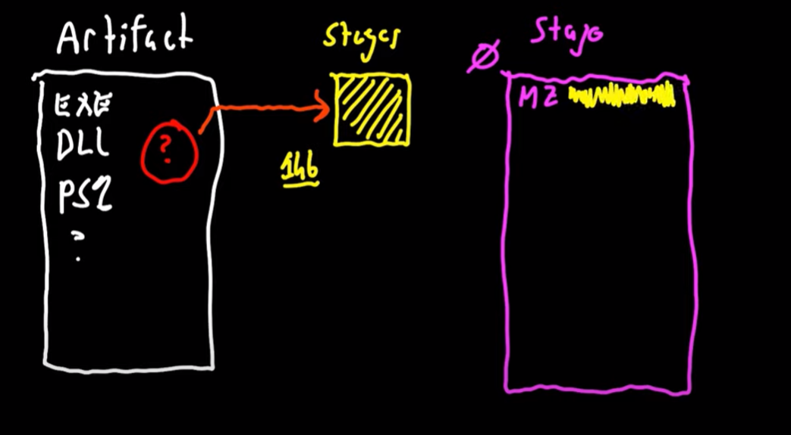

Overview:- Weaponization
- Methods
- ~ Executables and DLLs
- ~ Scripted Web Delivery
- ~ User-driven Attacks
- ~ Metasploit Framework Exploits
- ~ Go Custom!
- Tradecraft
=================================================================================================================
weaponization- to combine a payload with an artifact or exploit that will execute it

- Cobalts has 2 types of artifacts
1. will embed a payload stager as seen above
-
- Executables and DLLs:
- Attacks--> Packages--> Windows EXE (S)
-
- Want to run a DLL?
- ~ export architect-appropraite DLL (x86 or x64)
- ~ rundll32.exe whatever.dll,StartW